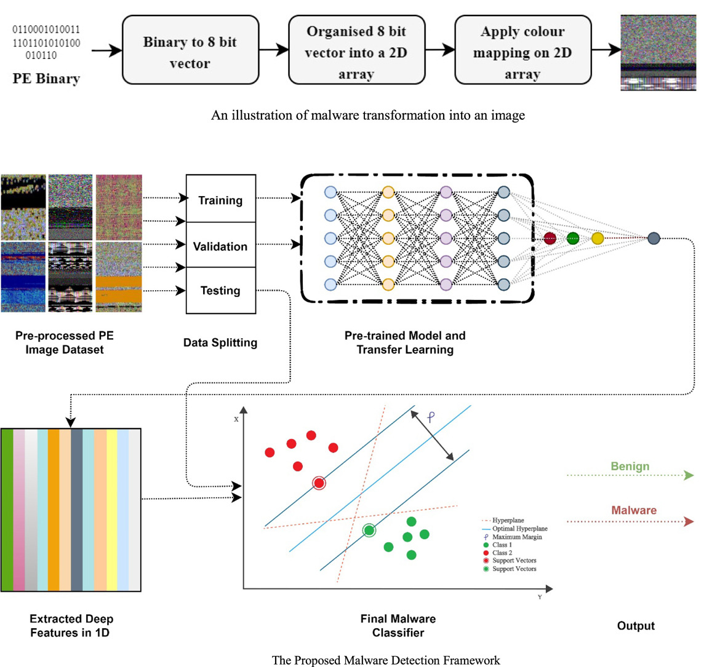

"A novel deep learning-based approach for malware detection" - An
Interactive Diagram
This interactive diagram illustrates the process of detecting malware in
portable executable (PE) files using deep learning techniques.
Hover over a component to learn more about its role in the malware
detection process.

The raw binary data of portable executable files are extracted.
The raw binary data of PE files is reinterpreted as an 8-bit vector.
The 8-bit vector is organized into a 2D array, which is in this case 224
rows by 224 columns.
A color mapping is applied to the 2D array to create an image.
The result is a 224x224 RGB image that represents the input executable
data.
The dataset is split into training, validation, and testing subsets. The
Malimg dataset is used to test the performance of the framework, and the
VirusShare dataset is used to test its generalization capabilties, being
composed of many real-life malware samples.
A pre-trained model trained from the ImageNet dataset for general image
recognition is used to identify deep features in the PE images. The deep
learning pre-trained model is not specifically designed for the malware
detection task, so rather than using it for classification, all the
features are extracted from the last fully connected layer to be
utilized instead in a model trained exclusively on the malware images.
The extracted features are fed into a final classifier Support Vector
Machine to distinguish between benign and malicious samples, and the
classifier outputs the final decision.
The resulting classification of the image represents whether or not the
executable file is malware. The classification process achieves an
accuracy of 99.06% on the Malimg dataset.
Kamran Shaukat, Suhuai Luo, Vijay Varadharajan,
A novel deep learning-based approach for malware detection,
Engineering Applications of Artificial Intelligence, Volume 122, 2023,
106030, ISSN 0952-1976,
https://doi.org/10.1016/j.engappai.2023.106030.